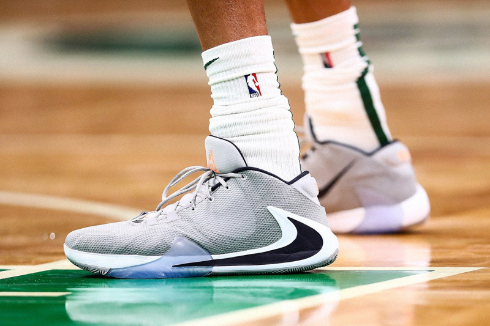

Як обрати баскетбольні кросівки?
Ми любимо баскетбол тому, що цей вид спорту досить високошвидкісний та динамічний. У якісь моменти ми здійснюємо різкі ривки, високі стрибки, несподівані зупинки та безумовно, саме це допомагає нам домінувати у грі та любити її за неповторні моменти.
При грі в баскетбол завжди є високий ризик отримати різноманітні травми, які затьмарюють наше задоволення і відправляють нас у лазарет на відновлення, яке може тривати від кількох днів до року. Але що б не траплялося, ми все одно любимо цю гру і намагаємося максимально убезпечити себе, коли це необхідно, щоб відчувати комфорт та зручність кожного кроку.
Але чому будь-якому баскетболісту потрібно думати про безпеку не менше, ніж про чисте і красиве влучення в кільце, що залишає за собою приємний звук сітки, що шарудить? Простий приклад: чим більше потужність двигуна автомобіля, тим більше виробники приділяють увагу різним системам, що допомагають зробити керування більш безпечним і приємним. Те саме стосується й баскетболу, чим більше ми здійснюємо стрибків та різких рухів, тим більше потрібно приділяти уваги безпеці у цій грі.
Звичайно безпека та комфорт у баскетболі досягається багатьма факторами. Наприклад, це повноцінне та збалансоване харчування, яке насичує наш організм численними корисними мікроелементами та вітамінами. Також безпека у грі досягається виконанням різних вправ на зміцнення зв'язок та суглобів у тренувальні періоди поза грою. Не менш важливим фактором є гарна розминка перед самою грою та чистота поверхні, на якій ми будемо здійснювати різні рухи. І все це важливі складові, які прямо чи опосередковано допоможуть нам уникнути різних травм у майбутньому.
Також для успішної, комфортної та безпечної гри необхідні якісні баскетбольні кросівки. Будь-яке взуття не здатне вберегти нас від отримання травми на всі 100%. Навіть за умови, що ми дотримуємося всіх рекомендацій, описаних вище.
Але чи це означає, що грати в баскетбол можна в будь-яких кросівках? Ні. І ось кілька причин. Деякі моделі просто не пристосовані для виконання дій, які мають на увазі гра в баскетбол. Інші кросівки можуть мати посередню якість або недовговічні матеріали, які можуть призвести до сумних наслідків.
І ось постає питання. Як же вибрати баскетбольні кросівки, які б допомогли отримувати від гри максимальне задоволення і насолоду? Ми зібрали всю необхідну інформацію на основі оцінок та відгуків як любителів, так і професійних спортсменів, щоб допомогти будь-якій людині визначитися з вибором та зрозуміти, на які фактори слід звернути свою увагу при купівлі баскетбольного взуття.
Оригінальне, фірмове взуття чи підійде будь-яке інше?
Свій вибір ми рекомендуємо розпочати саме з цього питання. Ми одразу хочемо згадати про важливість покупки тільки оригінальних баскетбольних кросівок від відомих виробників. Чому так? Фірмові кросівки від таких брендів, як Nike, Adidas, Jordan Brand, Under armour, Reebok, ANTA, PUMA, Converse, Peak та деяких інших, дозволяють отримати якісне взуття з міцними матеріалами та перевіреними технологіями, що пройшли контроль якості та численні випробування. Виробництво брендових кросівок ґрунтується на відгуках професійних спортсменів та їхньої подальшої експлуатації під час самої гри. Відповідно, фірмові баскетбольні кросівки дозволять нам почуватися на майданчику більш комфортно та впевнено.
Тут важливо наголосити на небезпеці підробки фірмового взуття. Зараз при покупці в інтернеті або в торгових центрах можна натрапити на такі підробки баскетбольних кросівок, які важко відрізнити при першому погляді навіть деяким фахівцям. Є ціла низка факторів, як відрізнити підробку від оригіналу. Ось деякі з них.
перевірені інтернет-магазини або фірмові відділи, які представляють бренд
розміри. Звертайте увагу на наявність підлоги розмірів та великих розмірів. На сайтах, що продають підробку, найчастіше лише ходові розміри серед чоловіків та жінок.
ціни не повинні сильно чи навіть у кілька разів відрізнятись від середньої ринкової вартості серед офіційних продавців.
До речі наш сервіс пропонує купити тільки оригінальні баскетбольні кросівки від відомих виробників у перевірених і надійних інтернет-магазинах, які зарекомендували себе виключно з позитивного боку! У кожного є можливість порівняти ціни серед цих постачальників, переглянути фото, почитати відгуки, дізнатися про знижки та доступні розміри. Наш сервіс значно полегшує пошук вигіднішого варіанту. Доступні варіанти можна знайти наприкінці статті.
Але чи це означає, що купувати не брендові баскетбольні кросівки небезпечно і краще не варто? Не завжди. У будь-якому випадку, при виборі кросівок варто враховувати кілька факторів:
наскільки якісні матеріали використані у них. Наприклад, як зроблені шви, чи проклеєні вони у місцях підвищеного зносу? Що за матеріал верху, чи він має хорошу зносостійкість? Як виконано систему шнурівки? Чи довговічна підошва та яка система амортизації?
наскільки зручне взуття. Наприклад, чи комфортно нозі, коли ви стоїте, коли ходите, коли стрибаєте? Наскільки щільно сидить стопа і чи надмірного дискомфорту немає?
Отже, незалежно від фінансової складової та своїх пріоритетів, кожному є над чим подумати. Одні керуються фразою «скупий платить двічі», інші не хочуть «переплачувати за бренд». Як би там не було, звертайте увагу на виконання конкретної баскетбольної моделі, яку ви хочете придбати. Визначте для себе, на якому рівні ви гратимете — аматорському чи професійному, оскільки чим серйозніший підхід до гри, тим більше має бути серйозних вкладень.
Висота профілю кросівка та їх вплив на стиль гри.
Існує три види висоти профілю баскетбольних кросівок - високі (High), середні (Mid) та низькі (Low). Раніше вважалося, що більш високі гравці, що б'ються під кільцем, повинні носити вищі кросівки, і, чим нижчий гравець, тим нижче повинна бути висота профілю його моделі для швидкості і маневреності. Тепер же цей стереотип почав набувати все більшої розмитості, оскільки поняття про позицію гравця в баскетболі сильно змінилося. Особливо це відчувається в НБА, де справжній прорив здійснили Кевін Дюрент з лінійкою кросівок Nike KD та Янніс Адетоумбо зі своїми Freak'ами, які назавжди змили поняття про класичний розподіл за позицією відповідно до зростання гравця.
Тепер, коли кожен хоче бути ЛеБроном Джеймсом, Яннісом Адетокумбо або Кевіном Дюрентом, вибирати висоту профілю слід орієнтуючись на свій стиль гри. Наприклад, якщо ви хочете грати на високих швидкостях, використовуючи дриблінг та швидкість першого кроку, сміливо вибирайте низький профіль і в деяких випадках середній, коли він має еластичну зону в районі гомілкостопа. Якщо ж ви хочете забивати зверху або битися під кільцем, зверніть увагу на більш високі моделі, які допоможуть захистити ваші суглоби відмінною амортизацією і м'яким бортиком. Тобто, хоча зростання і вага часом впливають на стиль гри, і ці фактори також потрібно враховувати при виборі висоти кросівки, однак, далеко не кожен хоче грати на певній позиції, і далеко не кожен грає на професійному рівні.

Тому середня висота профілю в сучасних баскетбольних кросівках є універсальнішою, які можуть використовувати як центрові та важкі форварди, так і легкі форварди, захисники і навіть розігрують. Не зосереджуйтесь надмірно на своєму зростанні та вазі, оскільки головним для вас фактором має бути комфорт та зручність при виконанні стандартних рухів у баскетболі, які ви схильні здійснювати більшою мірою. Також варто подумати про те, що якщо ви використовуєте захисний бандаж для кісточки, варто вибирати таке взуття, яке дозволить вам щільно його зафіксувати.
Якщо ж ви граєте на професійному або напівпрофесійному рівні, то підійти до вибору висоти профілю варто уважніше, можливо, порадившись зі своїм тренером, який підкаже, на якій позиції він збирається вас використовувати надалі. Якщо ж ви чітко закріплені за якоюсь позицією, то подумайте про те, яка роль відведена вам у команді, що саме від вас чекають? Що ви схильні робити під час самої гри - йти в проходи під кільце, боротися за підбирання або організовувати швидкі атаки?
Існує також думка, що висота профілю сильно впливає на захист та безпеку кісточки. Але подумайте ось про що. Наприклад, якщо зв'язки в районі гомілкостопу за природою слабкі, схильні до подворочування або навіть просто вже розтягнуті за роки повторних травм, то висота профілю не зможе вберегти від отримання рецидиву на всі 100%. Наприклад, високий профіль вбереже гомілковостоп, але при підгортанні створить навантаження на зв'язки та сухожилля колінного суглоба. Низький профіль має високий рівень небезпеки повторного отримання травми, але дає можливість носити бандаж і не навантажує коліно. Профіль Mid має щось середнє і тому є більш універсальним, хоча підкреслимо, що жоден профіль не зможе повністю захистити ваш гомілковостоп.
Висота профілю також дозволяє досягти різної фіксації стопи за допомогою системи шнурування. Іноді багато залежить від підйому ноги, який і визначає позитивні або негативні відгуки про ту чи іншу модель.
Отже, висота профілю має допомагати при грі в баскетбол, а не заважати чи доставляти дискомфорт. Найвірніший спосіб вибрати висоту профілю - це пограти в кожному з цих видів і постаратися відчути їхні переваги та недоліки на собі.
Про поверхню, на якій плануємо грати
Перед тим, як купити баскетбольні кросівки, варто врахувати для якого покриття ми їх купуємо — для гри в залі або на вулиці. У залах зазвичай часто паркет і в окремих випадках прогумоване покриття. На вуличних майданчиках покриття як правило жорсткіше для довговічності на відкритому просторі. Тому, залежно від поверхні, нам і варто вибирати собі кросівки.
Наприклад, для зали нам краще взяти м'якшу підошву, яка допоможе досягти максимального зчеплення з поверхнею, звичайно за умови, що паркет ретельно забирається і на ньому немає пилу, бруду або навіть непофарбованих місць. Ще за зчеплення відповідає малюнок протектора і багато хто відзначає високу ефективність так званої «ялинки», але не слід ставити її у пріоритет при виборі, оскільки інші малюнки мають не менш позитивні відгуки.
Для вулиці нам варто підібрати кросівки з більш твердою підміткою, щоб уникнути швидкого зносу на асфальті або будь-якому іншому грубому покритті. Потрібно пам'ятати, що будь-які кросівки на вуличних майданчиках зношуються швидше, а значить і догляд за ними має бути більш ретельним.
Багато відзначають переваги тих моделей, які краще гнуться ближче до носіння і досить тверді або менш гнучкі в середній частині. Це дозволить стрибати набагато легше на будь-якій з поверхонь.
Ще менш важливим чинником є система амортизації. У кожного бренду та моделі вони різні. І, звичайно, деякі кросівки призначені спеціально для швидкості, інші для кидків зверху. Але амортизація має бути, інакше незабаром можна знайти проблеми не лише з коліном, а й із хребтом. Багато баскетболістів, які грали на різних майданчиках, зазначають, що гра на асфальті більш травмонебезпечна та некомфортабельна для стрибків, ніж на інших покриттях. Тому якщо ви плануєте грати на повну силу на асфальтовому покритті, то враховуйте при виборі хорошу амортизацію та надійне зчеплення з широкою підошвою, яка підвищить стабілізацію та стійкість під час гри.
Наразі є збалансовані моделі баскетбольних кросівок, які можна використовувати як у залі, так і на вулиці. Підкреслимо, що багато залежить від вашого стилю гри, подальшої експлуатації та догляду за моделлю.
Тому визначте для себе поверхню, на якій ви гратимете. Можливо, варто взяти кілька кросівок, щоб одні використовувати в залі, інші на вулиці. Це найвірніший підхід, якщо ви граєте часто і на межі своїх можливостей.
Про матеріали верхньої частини кросівок
Сьогодні сучасні баскетбольні кросівки, на відміну від минулих, виготовляються із різних матеріалів. Довгий час вважалося, що лише натуральна шкіра здатна відповідати всім вимогам баскетбольного взуття. Однак, незважаючи на високу міцність, такі моделі досить важкі для сучасної швидкої гри. І тому зараз більшість брендів використовують поєднання натуральної шкіри, синтетичної шкіри, текстилю, сітчастих матеріалів, пластику та інших компонентів, здатних створити ідеальний варіант для будь-якого баскетболіста.
Кожен має свої пріоритети при виборі матеріалу верху. Для когось основою є довговічність та міцність, для інших найважливішими факторами є легкість та вентиляція. Сучасні баскетбольні кросівки мають збалансований склад матеріалів, який відповідає навіть найвищим вимогам.
Подивіться свої старі кросівки, та визначте їхні слабкі сторони та зношені місця. Для одних це буде область передньої частини стопи в районі великого пальця, причому не тільки матеріалів верху, а й підошви. У когось йде сильне зношування задньої частини та системи амортизації. Для інших доставляє дискомфорт система шнурівки та незручний язичок. Щоб це не було, візьміть цей момент собі на замітку, щоб при покупці нових кросівок подумати про те, як вони справлятимуться з нашими проблемними зонами.
Отже, матеріали верху часто наголошують на певні моменти - легкість, вентиляція, комфорт, гнучкість і так далі. Подумайте, що вам важливіше і вперед вибирати.
На що звернути увагу при примірці
В ідеалі, кожну модель було б добре поміряти. Однак як бути, якщо ви робите покупку через інтернет? Добре, якщо ви знаєте свій розмір у кожного бренду і при подальших покупках набуваєте саме його, тому що кожен виробник має свою розмірну сітку. Але що робити, якщо ми купуємо кросівки вперше та через інтернет-магазин?
Найважливішим є визначення розміру стопи по довжині та ширині. Важливо орієнтуватись на розмірну сітку виробника! Робити виміри стопи потрібно на рівній поверхні стоячи і бажано в другій половині, коли ми досить були схожі. Встаньте на білий аркуш паперу та під вертикальним кутом обведіть стопу олівцем або ручкою. Заміряйте довжину від великого пальця до п'яти. Це класичний варіант із визначенням довжини стопи. Бувають рідкісні випадки, коли в одній фірмі різні моделі сидять по-різному. Це залежить від особливостей будови взуття та тих технологій, які застосовувалися при її створенні. Також, щоб визначити розмір, можна сходити до найближчого відділу з продажем кросівок тієї чи іншої фірми. Але цей варіант можливий тільки якщо там продаються оригінальні кросівки, а не підробка, у яких розмірна сітка відрізняється. На крайній випадок можна приміряти кросівки свого друга, який має схожий або близький розмір.
Якщо ж покупка здійснюється безпосередньо в магазині, то найкраще робити це в спортивних шкарпетках і після того, як ми досить були схожі, оскільки наші ноги вже встигли отримати деяку напругу і відповідно трохи набрякли. Це цілком нормальне явище, оскільки під час гри наші стопи також мають властивість набрякати. Якщо ж покупка відбувається вранці або тоді, коли ноги не мали достатньої напруги, то краще брати модель на підлогу розміру більше, щоб уникнути дискомфорту під час гри. Якщо потрібна щільна посадка, то краще взяти розмір.
Обов'язково приміряйте кросівки на обидві ноги, оскільки довжина стопи може різнитися і надалі одній зі стоп доведеться відчувати дискомфорт.
Зверніть увагу на знімну устілку, яку можна в разі чого випрати або навіть замінити.
Далі слід щільно зашнурувати взуття, оскільки однією з найважливіших речей у баскетбольних кросівках є можливість щільно зафіксувати стопу завдяки системі шнурівки. Зараз на додаток до шнурок йдуть різні ремінці, фіксатори та іноді блискавки. Щільна фіксація стопи - запорука хорошої стабілізації та стійкості. Деякі гравці НБА, наприклад, у перерві під час гри періодично перешнуровують кросівки для досягнення оптимального результату.
Варто звичайно відзначити, що деякі не люблять щільну фіксацію кросівки, чому можна помітити моделі, що періодично злітають, з ніг гравців. Найкраще, це знайти золоту середину. Не потрібно сильно затискати стопу, тому що є ризик поганого кровообігу в тій ділянці організму. Але й не варто допускати, щоб стопа в кросівці «гуляла», бо є небезпека отримання ковзань, які можуть призвести до травми.
Далі слід встати і бути схожим, по можливості зробити стрибки та різкі зупинки, як під час гри (Заздалегідь попередьте продавця, щоб уникнути непорозуміння). Не поспішайте у цьому моменті, дайте ногам відчути взуття, звикнути до нього.

Якщо в цей момент ви помітили різкий дискофорт, то змініть розмір, або саму модель. Якщо цей дискофорт не значний, це може свідчити у тому, що модель потрібно розносити. Пам'ятайте, якщо взуття підійшло вам за розміром, то наступні натирання і мозолі - це особливість вашої стопи або експлуатації конкретної моделі. Якщо вони не проходять, можна застосувати різні розпірки, спреї для розтяжки, спеціальні устілки або скористатися народними премудростями для отримання бажаного результату.
Якщо ж є якісь особливості, наприклад, широка стопа або анатомічні відхилення, то подбайте про консультації з фахівцем, ортопедичні устілки, мазі, вправи і так далі.
Отже, приміряння взуття має бути обов'язковим. Однак, якщо покупка здійснюється через інтернет-магазин, ретельно зніміть мірки і при необхідності порадьтеся з менеджером або консультантом.
Висновки та основні моменти
Отже, підіб'ємо підсумки і подивимося на ті моменти, які потрібно врахувати при покупці.
Купуйте фірмове, брендове та оригінальне взуття у перевірених інтернет-магазинах або точках продажу. Пам'ятайте, що краще турбота про здоров'я своїх ніг, тим більше вони будуть нам вдячні протягом усього життя. Якщо ви знайшли бюджетні, не брендові кросівки, визначте, чи відповідатимуть вони основним вимогам баскетбольних моделей.
Визначте свій стиль гри та вибирайте ту висоту профілю, яка допоможе вам здійснювати звичні рухи у грі з легкістю та комфортом.
Подумайте для якої поверхні ви берете кросівки. Зал – м'яка підошва, вулиця – твердіша. Можна купити універсальні, але не лінуйтеся доглядати взуття, щоб воно прослужило довгий час.
Поміркуйте, що для вас найважливіше в баскетбольних кросівках? Легкість, вентиляція, довговічність, гнучкість та залежно від цього вибирайте дизайн верху. Подумайте про місця зносу на старих кросівках і наголосіть на їх посиленні в тій моделі, яку збираєтеся купувати.
Не поспішайте купувати одразу. Ретельно приміряйте. Якщо купуєте через інтернет-магазин, зніміть мірки та проконсультуйтеся з менеджером відділу продажу. Не бійтеся помилитись, оскільки більшість моделей робиться під стандартні розміри стопи.
Тому прислухайтеся, але в жодному разі не спирайтеся на думку інших про ту чи іншу модель, оскільки не тільки форма стопи у всіх різна, а й стиль гри.
Зверніть увагу, що вибір ідеального кросівка може зайняти деякий час і зусиль. Для деяких гравців НБА бренди фіксують усі особливості стопи і навіть у таких випадках бувають промахи та невдачі. Тож не втрачайте надії, у вас все вийде!